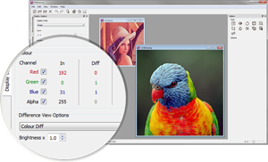
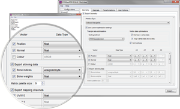
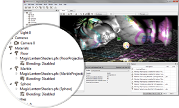
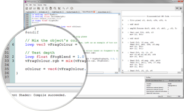
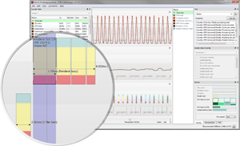
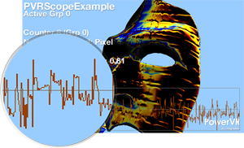
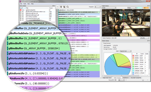
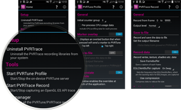

PowerVR Tools
Our suite of utilities is designed to enable rapid graphics application development. It targets a range of areas including asset exporting and optimization, PC emulation, prototyping environments, online and offline performance analysis tools and many more.
Each utility supports Windows, OS X and Linux. The minimum requirements are as follows (older versions might still work but limited support will be provided):
- Windows 7
- OS X – An Intel based machine with 10.8 (Mountain Lion)
- Linux – Ubuntu 12.04
Some utilities may have additional requirements, such as minimum version of OpenGL. For more information, please refer to the webpage of the utility you are interested in.
Asset Deployment Utilities | Development Utilities | Performance Analysis Utilities
Asset Deployment Utilities
-

PVRTexTool
This is a texture compression tool that supports all OpenGL, OpenGL ES and DirectX formats as well as PowerVR compression formats (PVRTC).
-

PVRGeoPOD
An exporter tool that facilitates exporting 3D scenes and their associated geometry data to the PowerVR Object Data (POD) optimized format.
Development Utilities
-

PVRShaman
This is a shader composer that uses PowerVR Object Data (POD) files and the PowerVR Effects (PFX) format to enable visual prototyping and profiling of shaders for OpenGL ES 2.0 and 3.0.
-

PVRVFrame
A collection of libraries that emulate OpenGL ES 1.x, 2.0, 3.0 and 3.1 as well as PowerVR extensions on development machines that do not natively support these Khronos APIs.
-

PVRShaderEditor
An editing tool to rapidly develop and optimize shaders for PowerVR graphics cores. PVRShaderEditor integrates our off-line GLSL ES compilers to enable as-you-type performance estimates.
Performance Analysis Utilities
-

PVRTune
This utility is a real-time GPU performance analysis tool. It captures hardware timing data and counters which facilitate the identification of performance bottlenecks.
-

PVRMonitor
An on-device hardware profiling tool for Android that displays real-time CPU and GPU performance data. PVRMonitor allows rapid visibility of performance fluctuations even at high frame rates.
-

PVRScope
Performance analysis library for developers to retrieve GPU counter data. It also works alongside PVRTune to complement it with custom markers and counters.
-

PVRTrace
An OpenGL ES API recording and analysis utility. PVRTrace GUI provides off-line tools to inspect captured data, identify redundant calls, highlight costly shaders and many more.
-

PVRHub
This is a PVRTrace and PVRTune configuration tool for Android and Linux, which allows recording and profiling on device.